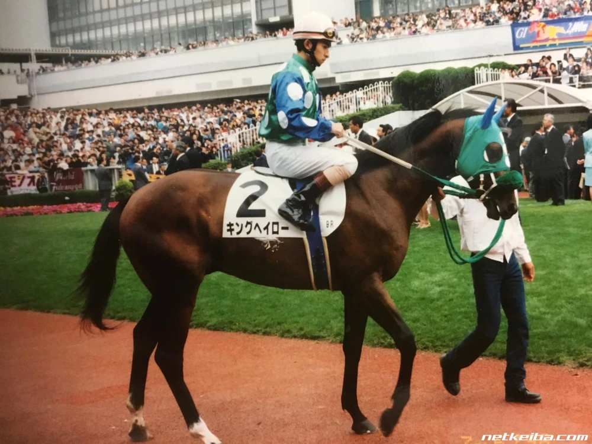

“In 2000, Takamatsunomiya Kinen. That horse proved his pedigree beyond ten-time defeats. How many times he lost, lost and lost, he never lowered his head. The green hood. The unconquerable being. That horse's name is ― King Halo.”
―2012 Takamatsunomiya Kinen TV commercial, by JRA

King Halo
King Halo was a racehorse that competed from 1997 to 2000. He had a great pedigree, but was unable to win any of the Classics. He also ran a large variety of G1 races of differing lengths, as well as both turf and dirt races, but was unable to win any until his eleventh G1, the 2000 Takamatsunomiya Kinen. The horse also showed strength in other distances, as he had come in fifth in the 1998 Kikuka-shō. After retiring from racing, King Halo had a successful stud career.
Quick Trivia
- Halo ― Comes from his mother and broodmare sire. At first, his name was Asaka Halo. His owner Asakawa renamed him King Halo before debut.
- King Halo kept his head high as he ran. This running form was reproduced in the anime.
- King Halo's damsire and namesake, Halo, was known for being an especially dangerous horse to handle, and was forced to wear a muzzle to prevent violent biting attacks. King Halo never displayed such behavioral issues.